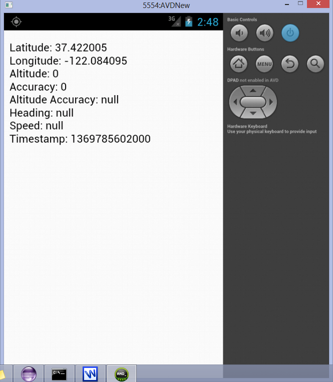

Important distinctions between a project created with and without phone gap:
Starting with project created from phone gap:
Go to http://phonegap.com/ and click on Download Phone Gap and extract its contents.
Install Java and set java path in JAVA_HOME in environment variables.
Additionally, you may need to include %JAVA_HOME%\bin to your PATH as well. To check to see if this is required, run a command prompt and type java. If the program can not be found add %JAVA_HOME%\bin to the PATH. You may need to specify the full path instead of using the %JAVA_HOME% environment variable.
Install Android SDK from http://developer.android.com/sdk/index.html
Set up the paths <android sdk path>\tools and <android sdk path>\platform-tools in Path of Environment variables after installing Android SDK.
Download Apache Ant version 1.9 from http://ant.apache.org/.
Finally, you may need to include %ANT_HOME%\bin to your PATH as well. To check to see if this is required, run a command prompt and type ant. If the program can not be found add %ANT_HOME%\bin to the PATH. You may need to specify the full path instead of using the %ANT_HOME% environment variable.
After extracting the installed phoneGap.
Navigate to bin/ directory in android/ directory of phone gap.
Type create <project folder path> <package name> <project name>
Eg:
Project folder path: C:\users\karthik kamarapu\workspace/android1\sample
Package name: com.example.sample
Project name :sample.
The above will create a directory with the project name at the path mentioned in the project folder path.The project created will have all the directories required to build an application using phone gap.
A project created through phone gap will have the directory www/ under
Assets/ directory.
The www/ directory will have index.html,cordova-x.x.x.js,main.js,master.css and spec.html files.
A coredava/ directory is also present which has appinfo.jar
The lib/ directory will have cordova-x.x.x.jar present in it.
AndroidManifest.xml will have all the permission automaticall added.
Create New Project->Android Project from Existing Code and select the directory created at Set Up New Project.
If the project has any errors from AndroidManifest.xml.Select the target version of android API level as the highest.Then from project menu bar select clean.
The project already has a www\ directory under assets\ directory.
The index. Html in www\ will have the display logic and gets called from the main activity.
package org.apache.cordova.example;
import android.os.Bundle;
import org.apache.cordova.*;
Public class example extends DroidGap {
@override
Public void onCreate(Bundle savedInstanceState){
super.onCreate(savedInstanceState);
super.loadUrl("file:///android_asset/www/index.html");
}
}
<!DOCTYPE HTML>
<html>
<head>
<title>Device Properties Example</title>
<script type="text/javascript" charset="utf-8" src="cordova-2.7.0.js"></script>
<script type="text/javascript" charset="utf-8">
// Wait for Cordova to load
//
document.addEventListener("deviceready", onDeviceReady, false);
// Cordova is ready
//
function onDeviceReady() {
navigator.geolocation.getCurrentPosition(onSuccess, onError,{enableHighAccuracy:true});
}
// onSuccess Geolocation
//
function onSuccess(position) {
var element = document.getElementById('geolocation');
element.innerHTML = 'Latitude: ' + position.coords.latitude + '<br />' +
'Longitude: ' + position.coords.longitude + '<br />' +
'Altitude: ' + position.coords.altitude + '<br />' +
'Accuracy: ' + position.coords.accuracy + '<br />' +
'Altitude Accuracy: ' + position.coords.altitudeAccuracy + '<br />' +
'Heading: ' + position.coords.heading + '<br />' +
'Speed: ' + position.coords.speed + '<br />' +
'Timestamp: ' + position.timestamp + '<br />';
}
// onError Callback receives a PositionError object
//
function onError(error) {
alert('code: ' + error.code + '\n' +
'message: ' + error.message + '\n');
}
</script>
</head>
<body>
<p id="geolocation">Finding geolocation...</p>
</body>
</html>
